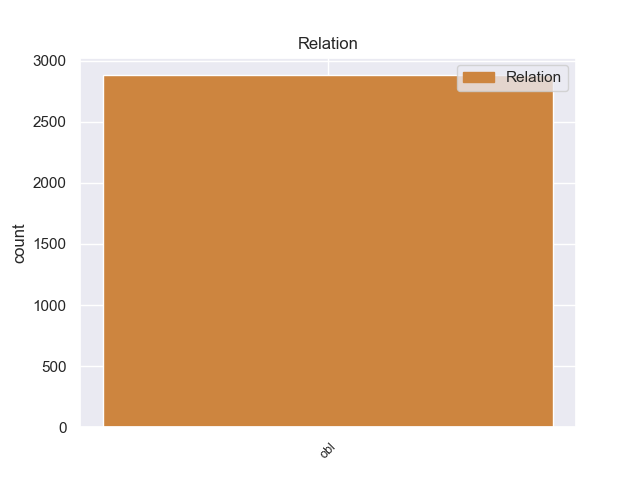
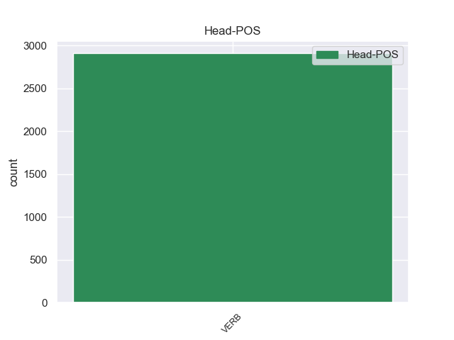
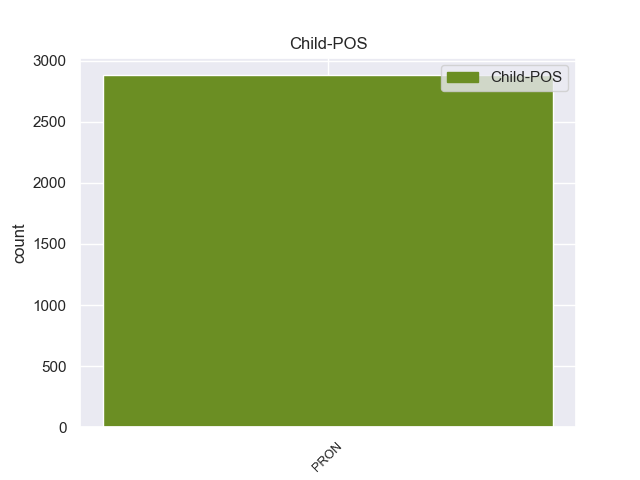

Distribution of features within this leaf



Morphosyntax Rules sorted by frequency.
- When the dependent token is the oblique nominal(obl) of the head token, and the dependent token is PRON, the Case needs to be Nom.
1 उन्होंने _ _ _ _ 0 _ _ _
2 यहां यहाँ PRON PRP Case=Nom|PronType=Prs 22 obl _ ChunkId=NP2|ChunkType=head|Translit=yahāṁ
3 वेटिकन _ _ _ _ 0 _ _ _
4 दूतावास _ _ _ _ 0 _ _ _
5 में _ _ _ _ 0 _ _ _
6 एक _ _ _ _ 0 _ _ _
7 शोक _ _ _ _ 0 _ _ _
8 पुस्तिका _ _ _ _ 0 _ _ _
9 पर _ _ _ _ 0 _ _ _
10 हस्ताक्षर _ _ _ _ 0 _ _ _
11 कर _ _ _ _ 0 _ _ _
12 पोप _ _ _ _ 0 _ _ _
13 जॉन _ _ _ _ 0 _ _ _
14 पॉल _ _ _ _ 0 _ _ _
15 द्वितीय _ _ _ _ 0 _ _ _
16 के _ _ _ _ 0 _ _ _
17 निधन _ _ _ _ 0 _ _ _
18 पर _ _ _ _ 0 _ _ _
19 गहरा _ _ _ _ 0 _ _ _
20 दुख _ _ _ _ 0 _ _ _
21 प्रकट _ _ _ _ 0 _ _ _
22 किया कर VERB VM Aspect=Perf|Gender=Masc|Number=Sing|VerbForm=Part|Voice=Act 0 _ _ _
23 । _ _ _ _ 0 _ _ _
non-conforming Examples:
1 इससे यह PRON PRP Case=Acc,Ins|Number=Sing|Person=3|PronType=Prs 2 obl _ ChunkId=NP|ChunkType=head|Tam=se|Translit=isase|Vib=से
2 लगा लग VERB VM Aspect=Perf|Gender=Masc|Number=Sing|VerbForm=Part 0 _ _ _
3 हुआ _ _ _ _ 0 _ _ _
4 एक _ _ _ _ 0 _ _ _
5 संग्रहालय _ _ _ _ 0 _ _ _
6 है _ _ _ _ 0 _ _ _
7 जहाँ _ _ _ _ 0 _ _ _
8 मध्यप्रदेश _ _ _ _ 0 _ _ _
9 के _ _ _ _ 0 _ _ _
10 रायसेन _ _ _ _ 0 _ _ _
11 , _ _ _ _ 0 _ _ _
12 सीहोर _ _ _ _ 0 _ _ _
13 , _ _ _ _ 0 _ _ _
14 मंदसौर _ _ _ _ 0 _ _ _
15 और _ _ _ _ 0 _ _ _
16 शहडोल _ _ _ _ 0 _ _ _
17 जिलों _ _ _ _ 0 _ _ _
18 से _ _ _ _ 0 _ _ _
19 एकत्रित _ _ _ _ 0 _ _ _
20 कला _ _ _ _ 0 _ _ _
21 नमूनों _ _ _ _ 0 _ _ _
22 को _ _ _ _ 0 _ _ _
23 रखा _ _ _ _ 0 _ _ _
24 गया _ _ _ _ 0 _ _ _
25 है _ _ _ _ 0 _ _ _
26 । _ _ _ _ 0 _ _ _
1 सँकरी _ _ _ _ 0 _ _ _
2 गलियों _ _ _ _ 0 _ _ _
3 में _ _ _ _ 0 _ _ _
4 स्थित _ _ _ _ 0 _ _ _
5 दुकानें _ _ _ _ 0 _ _ _
6 हैं _ _ _ _ 0 _ _ _
7 जिनमें जो PRON PRP Case=Acc,Ine|Number=Plur|Person=3|PronType=Prs 11 obl _ ChunkId=NP3|ChunkType=head|Tam=meM|Translit=jinameṁ|Vib=में
8 शिल्प _ _ _ _ 0 _ _ _
9 के _ _ _ _ 0 _ _ _
10 खजाने _ _ _ _ 0 _ _ _
11 खुले खुल VERB VM Aspect=Perf|Gender=Masc|Number=Plur|Person=3|VerbForm=Part|Voice=Act 0 _ _ _
12 हुए _ _ _ _ 0 _ _ _
13 हैं _ _ _ _ 0 _ _ _
14 । _ _ _ _ 0 _ _ _
1 इसकी _ _ _ _ 0 _ _ _
2 मजबूत _ _ _ _ 0 _ _ _
3 दीवारों _ _ _ _ 0 _ _ _
4 के _ _ _ _ 0 _ _ _
5 साथ _ _ _ _ 0 _ _ _
6 नाजुकी _ _ _ _ 0 _ _ _
7 से _ _ _ _ 0 _ _ _
8 बनी _ _ _ _ 0 _ _ _
9 हुई _ _ _ _ 0 _ _ _
10 छतरियाँ _ _ _ _ 0 _ _ _
11 कमाल _ _ _ _ 0 _ _ _
12 का _ _ _ _ 0 _ _ _
13 संतुलन _ _ _ _ 0 _ _ _
14 बनाती _ _ _ _ 0 _ _ _
15 हैं _ _ _ _ 0 _ _ _
16 और _ _ _ _ 0 _ _ _
17 इससे यह PRON PRP Case=Acc,Ins|Number=Sing|Person=3|PronType=Prs 23 obl _ ChunkId=NP7|ChunkType=head|Tam=se|Translit=isase|Vib=से
18 पूरी _ _ _ _ 0 _ _ _
19 इमारत _ _ _ _ 0 _ _ _
20 अत्यंत _ _ _ _ 0 _ _ _
21 समृद्धिपूर्ण _ _ _ _ 0 _ _ _
22 प्रभाव _ _ _ _ 0 _ _ _
23 देती दे VERB VM Aspect=Imp|Gender=Fem|Number=Sing|Person=3|VerbForm=Part|Voice=Act 0 _ _ _
24 है _ _ _ _ 0 _ _ _
25 । _ _ _ _ 0 _ _ _
1 इसके _ _ _ _ 0 _ _ _
2 आस _ _ _ _ 0 _ _ _
3 - _ _ _ _ 0 _ _ _
4 पास _ _ _ _ 0 _ _ _
5 की _ _ _ _ 0 _ _ _
6 दीवारें _ _ _ _ 0 _ _ _
7 कुछ _ _ _ _ 0 _ _ _
8 झुकी _ _ _ _ 0 _ _ _
9 हुई _ _ _ _ 0 _ _ _
10 सी _ _ _ _ 0 _ _ _
11 हैं _ _ _ _ 0 _ _ _
12 जिसके जो PRON PRP Case=Acc,Gen|Gender=Masc|Number=Sing|Person=3|Poss=Yes|PronType=Prs 17 obl _ ChunkId=NP3|ChunkType=head|Tam=ke|Translit=jisake|Vib=0_कारण
13 कारण _ _ _ _ 0 _ _ _
14 इसे _ _ _ _ 0 _ _ _
15 हिंडोला _ _ _ _ 0 _ _ _
16 महल _ _ _ _ 0 _ _ _
17 कहा कह VERB VM Aspect=Perf|Gender=Masc|Number=Sing|Person=3|VerbForm=Part|Voice=Act 0 _ _ _
18 जाता _ _ _ _ 0 _ _ _
19 है _ _ _ _ 0 _ _ _
20 . _ _ _ _ 0 _ _ _
1 यहाँ यहाँ PRON PRP Case=Acc|PronType=Prs 8 obl _ ChunkId=NP|ChunkType=head|Translit=yahām̃|Vib=0_से
2 से _ _ _ _ 0 _ _ _
3 पूरे _ _ _ _ 0 _ _ _
4 मांडू _ _ _ _ 0 _ _ _
5 का _ _ _ _ 0 _ _ _
6 विहंगम _ _ _ _ 0 _ _ _
7 दृश्य _ _ _ _ 0 _ _ _
8 देखा देख VERB VM Aspect=Perf|Gender=Masc|Number=Sing|Person=3|VerbForm=Part|Voice=Pass 0 _ _ _
9 जा _ _ _ _ 0 _ _ _
10 सकता _ _ _ _ 0 _ _ _
11 है _ _ _ _ 0 _ _ _
12 । _ _ _ _ 0 _ _ _